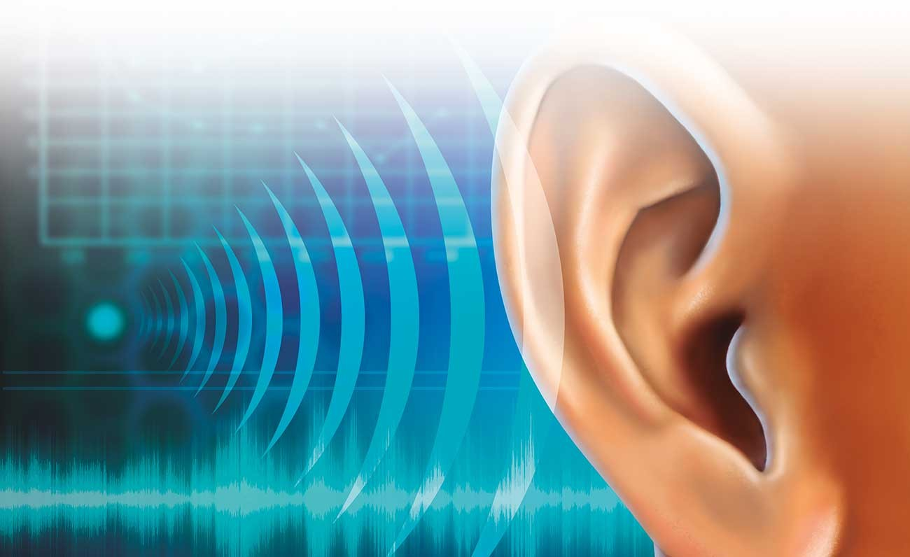

📌 ¿Qué es?

El sistema auditivo humano es el conjunto de órganos y estructuras que nos permiten percibir, transmitir e interpretar los sonidos. Convierte las ondas sonoras en impulsos nerviosos que el cerebro reconoce como voces, música, ruidos, etc.
📌 Partes del sistema auditivo
Oído externo:
- Pabellón auricular: recoge las ondas sonoras del ambiente. Conducto auditivo: canaliza el sonido hacia el tímpano. Tímpano (membrana timpánica): vibra con las ondas sonoras.
Oído medio
- Contiene tres huesecillos: Martillo, yunque y estribo. Su función es amplificar y transmitir las vibraciones del tímpano hacia el oído interno. También incluye la trompa de Eustaquio, que regula la presión del aire. Ejemplo: teatros, auditorios, cines, salas de grabación.
Oído interno
- Cóclea (caracol): estructura en espiral llena de líquido y células sensoriales (células ciliadas). Convierte las vibraciones mecánicas en impulsos eléctricos. Nervio auditivo: lleva la información al cerebro. También está el sistema vestibular, encargado del equilibrio.
📌 Proceso de audición (paso a paso)
El pabellón auricular capta el sonido. Las ondas viajan por el conducto auditivo y hacen vibrar el tímpano. Los huesecillos amplifican y transmiten esas vibraciones al oído interno. La cóclea transforma las vibraciones en señales eléctricas. El nervio auditivo envía las señales al cerebro (corteza auditiva), donde son interpretadas como sonidos.
📌 Características de la audición humana
Rango de frecuencias audibles: 20 Hz a 20,000 Hz. El oído es más sensible entre 1,000 y 5,000 Hz (zona de la voz humana). La pérdida de audición puede deberse a: Daño en el oído externo o medio (hipoacusia conductiva). Daño en el oído interno o nervio auditivo (hipoacusia neurosensorial).-